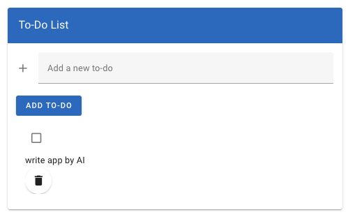

AI 写程序靠谱吗
Posted on 一 15 7月 2024 in Journal
| Abstract | AI 写程序靠谱吗 |
|---|---|
| Authors | Walter Fan |
| Category | learning note |
| Status | v1.0 |
| Updated | 2024-07-15 |
| License | CC-BY-NC-ND 4.0 |
作为一个后端程序员, 我想写一个 todo list, 我懂点 Javascript, 可是对 VUE 不熟悉, 让 ChatGPT 来帮我写一段 它根据我的需要洋洋洒洒写了如下的代码
Please write a web app of todo list by VUE
Sure! Here's a step-by-step guide to creating a simple to-do list web app using Vue.js.
Step 1: Setup the Vue Project
First, ensure you have Node.js and npm installed on your system. Then, install Vue CLI if you haven't already:
npm install -g @vue/cli
Create a new Vue project:
vue create todo-list
Navigate to the project directory:
cd todo-list
Step 2: Create the To-Do List Component
Create a new component called TodoList.vue inside the src/components directory.
touch src/components/TodoList.vue
Edit TodoList.vue:
<template>
<div class="todo-list">
<h1>To-Do List</h1>
<input v-model="newTodo" @keyup.enter="addTodo" placeholder="Add a new to-do" />
<button @click="addTodo">Add To-Do</button>
<ul>
<li v-for="(todo, index) in todos" :key="index">
<input type="checkbox" v-model="todo.completed" />
<span :class="{ completed: todo.completed }">{{ todo.text }}</span>
<button @click="removeTodo(index)">Remove</button>
</li>
</ul>
</div>
</template>
<script>
export default {
data() {
return {
newTodo: '',
todos: []
};
},
methods: {
addTodo() {
if (this.newTodo.trim()) {
this.todos.push({ text: this.newTodo, completed: false });
this.newTodo = '';
}
},
removeTodo(index) {
this.todos.splice(index, 1);
}
}
};
</script>
<style scoped>
.todo-list {
max-width: 600px;
margin: 0 auto;
text-align: center;
}
input[type="text"] {
padding: 10px;
margin: 5px;
width: 80%;
}
button {
padding: 10px;
margin: 5px;
}
.completed {
text-decoration: line-through;
}
</style>
Step 3: Use the Component in Your Application
Edit App.vue to use the TodoList component:
<template>
<div id="app">
<TodoList />
</div>
</template>
<script>
import TodoList from './components/TodoList.vue';
export default {
name: 'App',
components: {
TodoList
}
};
</script>
<style>
/* Add your styles here */
</style>
Step 4: Run the Application
Now you can run your Vue application:
npm run serve
而我想美化它的界面
Please improve the web app with better UI
To enhance the UI of the to-do list web app, we can use a popular UI framework like Bootstrap or Vuetify. In this example, I'll use Vuetify, which is a Vue UI Library with beautifully handcrafted Material Components.
Step 1: Install Vuetify
First, you need to add Vuetify to your Vue project:
vue add vuetify
Follow the prompts to choose the default preset.
Step 2: Update TodoList Component
Update TodoList.vue to use Vuetify components:
<template>
<v-container>
<v-card class="mx-auto" max-width="600">
<v-toolbar color="primary" dark>
<v-toolbar-title>To-Do List</v-toolbar-title>
</v-toolbar>
<v-card-text>
<v-form @submit.prevent="addTodo">
<v-text-field
v-model="newTodo"
label="Add a new to-do"
prepend-icon="mdi-plus"
@keyup.enter="addTodo"
></v-text-field>
<v-btn color="primary" @click="addTodo">Add To-Do</v-btn>
</v-form>
<v-list>
<v-list-item
v-for="(todo, index) in todos"
:key="index"
class="d-flex justify-space-between"
>
<v-list-item-content>
<v-checkbox v-model="todo.completed" hide-details></v-checkbox>
<v-list-item-title :class="{ 'completed-task': todo.completed }">{{ todo.text }}</v-list-item-title>
</v-list-item-content>
<v-btn icon @click="removeTodo(index)">
<v-icon>mdi-delete</v-icon>
</v-btn>
</v-list-item>
</v-list>
</v-card-text>
</v-card>
</v-container>
</template>
<script>
export default {
data() {
return {
newTodo: '',
todos: []
};
},
methods: {
addTodo() {
if (this.newTodo.trim()) {
this.todos.push({ text: this.newTodo, completed: false });
this.newTodo = '';
}
},
removeTodo(index) {
this.todos.splice(index, 1);
}
}
};
</script>
<style scoped>
.completed-task {
text-decoration: line-through;
}
</style>
Step 3: Use Vuetify in Your App
Edit App.vue to ensure it's set up to use Vuetify:
<template>
<v-app>
<TodoList />
</v-app>
</template>
<script>
import TodoList from './components/TodoList.vue';
export default {
name: 'App',
components: {
TodoList
}
};
</script>
<style>
@import '~vuetify/dist/vuetify.min.css';
</style>
Step 4: Run the Application
Now you can run your Vue application again:
npm run serve
用浏览器打开 http://localhost:8080 就可以看到如下的 web 应用程序

看起来, 象模象样, 比我这个前端二把刀强得多, 起码按要求写前端代码没什么大问题, 也可能我比较熟悉后端, 感觉 AI 写的后端程序质量不高, 也就是考虑的不全面. 当然, 如果你对它说得够详细, 它就能做得很好.
本作品采用 AI 辅助创作